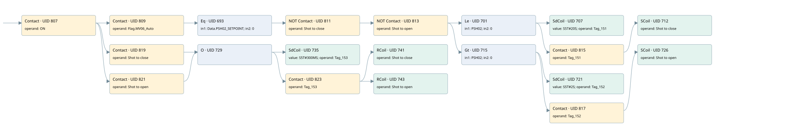

the working tool has a low range
valve control loop · 검색 색인 순서 9 · 원본 내부 NID 추정 8
백업 PLF 원본의 2923037 바이트 위치에서 복원한 XML. 검색 문서 1710의 객체 키 161022007e12000000000000와 연결했다. 이름 해석 25/25개. 남은 RefId는 상수 또는 미해석 참조다.
연결 구조 다시 그리기
원본 Part/PCon/Wire를 이용한 연결도다. TIA 화면의 래더 배치 또는 실행 결과를 재현한 그림은 아니다. 핀 연결은 아래 표와 원본 XML을 기준으로 읽는다. 노드 위에 마우스를 두면 피연산자 이름을 볼 수 있다.

접점·코일·블록과 피연산자
| Part UID | Gate | Negated 핀 | 연결 피연산자 |
|---|---|---|---|
| 807 | Contact | operand = ON | |
| 809 | Contact | operand = Flag.MV06_Auto | |
| 693 | Eq | in1 = Data.PSH02_SETPOINT; in2 = 0 | |
| 811 | Contact | operand | operand = Shot to close |
| 813 | Contact | operand | operand = Shot to open |
| 701 | Le | in1 = PSH02; in2 = 0 | |
| 707 | SdCoil | value = S5T#20S; operand = Tag_151 | |
| 815 | Contact | operand = Tag_151 | |
| 712 | SCoil | operand = Shot to close | |
| 715 | Gt | in1 = PSH02; in2 = 0 | |
| 721 | SdCoil | value = S5T#2S; operand = Tag_152 | |
| 817 | Contact | operand = Tag_152 | |
| 726 | SCoil | operand = Shot to open | |
| 819 | Contact | operand = Shot to close | |
| 821 | Contact | operand = Shot to open | |
| 729 | O | ||
| 735 | SdCoil | value = S5T#300MS; operand = Tag_153 | |
| 823 | Contact | operand = Tag_153 | |
| 741 | RCoil | operand = Shot to close | |
| 743 | RCoil | operand = Shot to open |
접점 경로를 펼친 조건식
Contact·O/A·비교기의 원본 연결을 읽기 쉽게 펼친 보조 해석이다. POWER는 전원 레일 시작을 뜻한다. 호출 블록·에지·타이머의 내부 동작과 다중 쓰기 순서는 이 표로 실행 검증하지 않았다. 미해석 핀과 RefId는 원문 연결표에서 확인한다.
| UID | 동작 | 대상 | 원본 접점 경로 | 내용 |
|---|---|---|---|---|
| 707 | SdCoil | Tag_151 | (((((ON AND Flag.MV06_Auto) AND [Data.PSH02_SETPOINT = 0]) AND NOT [Shot to close]) AND NOT [Shot to open]) AND [PSH02 <= 0]) | 시간 동작 SdCoil; 타이머 의미 추가 확인 / 시간 인자 S5T#20S |
| 712 | SCoil | Shot to close | ((((((ON AND Flag.MV06_Auto) AND [Data.PSH02_SETPOINT = 0]) AND NOT [Shot to close]) AND NOT [Shot to open]) AND [PSH02 <= 0]) AND Tag_151) | 조건 성립 시 Set |
| 721 | SdCoil | Tag_152 | (((((ON AND Flag.MV06_Auto) AND [Data.PSH02_SETPOINT = 0]) AND NOT [Shot to close]) AND NOT [Shot to open]) AND [PSH02 > 0]) | 시간 동작 SdCoil; 타이머 의미 추가 확인 / 시간 인자 S5T#2S |
| 726 | SCoil | Shot to open | ((((((ON AND Flag.MV06_Auto) AND [Data.PSH02_SETPOINT = 0]) AND NOT [Shot to close]) AND NOT [Shot to open]) AND [PSH02 > 0]) AND Tag_152) | 조건 성립 시 Set |
| 735 | SdCoil | Tag_153 | ((ON AND Shot to close) OR (ON AND Shot to open)) | 시간 동작 SdCoil; 타이머 의미 추가 확인 / 시간 인자 S5T#300MS |
| 741 | RCoil | Shot to close | (((ON AND Shot to close) OR (ON AND Shot to open)) AND Tag_153) | 조건 성립 시 Reset |
| 743 | RCoil | Shot to open | (((ON AND Shot to close) OR (ON AND Shot to open)) AND Tag_153) | 조건 성립 시 Reset |
원본 배선 연결
| Wire UID | 동일 Wire 연결 끝점 |
|---|---|
| 825 | Powerrail {} ↔ Part 807.in |
| 770 | ORef 745 (ON) ↔ Part 807.operand |
| 808 | Part 807.out ↔ Part 809.in ↔ Part 819.in ↔ Part 821.in |
| 771 | ORef 746 (Flag.MV06_Auto) ↔ Part 809.operand |
| 810 | Part 809.out ↔ Part 693.pre |
| 772 | ORef 747 (Data.PSH02_SETPOINT) ↔ Part 693.in1 |
| 773 | ORef 748 (0) ↔ Part 693.in2 |
| 774 | Part 693.out ↔ Part 811.in |
| 775 | ORef 749 (Shot to close) ↔ Part 811.operand |
| 812 | Part 811.out ↔ Part 813.in |
| 776 | ORef 750 (Shot to open) ↔ Part 813.operand |
| 814 | Part 813.out ↔ Part 701.pre ↔ Part 715.pre |
| 777 | ORef 751 (PSH02) ↔ Part 701.in1 |
| 778 | ORef 752 (0) ↔ Part 701.in2 |
| 779 | Part 701.out ↔ Part 707.in ↔ Part 815.in |
| 780 | ORef 753 (S5T#20S) ↔ Part 707.value |
| 781 | ORef 754 (Tag_151) ↔ Part 707.operand |
| 782 | ORef 755 (Tag_151) ↔ Part 815.operand |
| 816 | Part 815.out ↔ Part 712.in |
| 784 | ORef 756 (Shot to close) ↔ Part 712.operand |
| 786 | ORef 757 (PSH02) ↔ Part 715.in1 |
| 787 | ORef 758 (0) ↔ Part 715.in2 |
| 788 | Part 715.out ↔ Part 721.in ↔ Part 817.in |
| 789 | ORef 759 (S5T#2S) ↔ Part 721.value |
| 790 | ORef 760 (Tag_152) ↔ Part 721.operand |
| 791 | ORef 761 (Tag_152) ↔ Part 817.operand |
| 818 | Part 817.out ↔ Part 726.in |
| 793 | ORef 762 (Shot to open) ↔ Part 726.operand |
| 796 | ORef 763 (Shot to close) ↔ Part 819.operand |
| 820 | Part 819.out ↔ Part 729.in1 |
| 797 | ORef 764 (Shot to open) ↔ Part 821.operand |
| 822 | Part 821.out ↔ Part 729.in2 |
| 798 | Part 729.out ↔ Part 735.in ↔ Part 823.in |
| 799 | ORef 765 (S5T#300MS) ↔ Part 735.value |
| 800 | ORef 766 (Tag_153) ↔ Part 735.operand |
| 801 | ORef 767 (Tag_153) ↔ Part 823.operand |
| 824 | Part 823.out ↔ Part 741.in ↔ Part 743.in |
| 802 | ORef 768 (Shot to close) ↔ Part 741.operand |
| 803 | ORef 769 (Shot to open) ↔ Part 743.operand |
식별자 해석 근거 25개
| ORef UID | RefId | 이름 | IdentXmlPart 파일 | 해석 방법 |
|---|---|---|---|---|
| 745 | 1 | ON | 0617-IdentXmlPart.xml | UID/RID + search-text + NID agreement |
| 746 | 81 | Flag.MV06_Auto | 0619-IdentXmlPart.xml | UID/RID + search-text + NID agreement |
| 747 | 71 | Data.PSH02_SETPOINT | 0619-IdentXmlPart.xml | UID/RID + search-text + NID agreement |
| 748 | 38 | 0 | 0620-IdentXmlPart.xml | literal candidate: UID/RID/NID + nearby named declarations + search-text agreement |
| 749 | 82 | Shot to close | 0617-IdentXmlPart.xml | UID/RID + search-text + NID agreement |
| 750 | 83 | Shot to open | 0617-IdentXmlPart.xml | UID/RID + search-text + NID agreement |
| 751 | 84 | PSH02 | 0617-IdentXmlPart.xml | UID/RID + search-text + NID agreement |
| 752 | 38 | 0 | 0620-IdentXmlPart.xml | literal candidate: UID/RID/NID + nearby named declarations + search-text agreement |
| 754 | 88 | Tag_151 | 0617-IdentXmlPart.xml | UID/RID + search-text + NID agreement |
| 753 | 87 | S5T#20S | 0620-IdentXmlPart.xml | literal candidate: UID/RID/NID + nearby named declarations + search-text agreement |
| 755 | 88 | Tag_151 | 0617-IdentXmlPart.xml | UID/RID + search-text + NID agreement |
| 756 | 82 | Shot to close | 0617-IdentXmlPart.xml | UID/RID + search-text + NID agreement |
| 757 | 84 | PSH02 | 0617-IdentXmlPart.xml | UID/RID + search-text + NID agreement |
| 758 | 38 | 0 | 0620-IdentXmlPart.xml | literal candidate: UID/RID/NID + nearby named declarations + search-text agreement |
| 760 | 90 | Tag_152 | 0617-IdentXmlPart.xml | UID/RID + search-text + NID agreement |
| 759 | 89 | S5T#2S | 0620-IdentXmlPart.xml | literal candidate: UID/RID/NID + nearby named declarations + search-text agreement |
| 761 | 90 | Tag_152 | 0617-IdentXmlPart.xml | UID/RID + search-text + NID agreement |
| 762 | 83 | Shot to open | 0617-IdentXmlPart.xml | UID/RID + search-text + NID agreement |
| 763 | 82 | Shot to close | 0617-IdentXmlPart.xml | UID/RID + search-text + NID agreement |
| 764 | 83 | Shot to open | 0617-IdentXmlPart.xml | UID/RID + search-text + NID agreement |
| 766 | 91 | Tag_153 | 0617-IdentXmlPart.xml | UID/RID + search-text + NID agreement |
| 765 | 76 | S5T#300MS | 0620-IdentXmlPart.xml | literal candidate: UID/RID/NID + nearby named declarations + search-text agreement |
| 767 | 91 | Tag_153 | 0617-IdentXmlPart.xml | UID/RID + search-text + NID agreement |
| 768 | 82 | Shot to close | 0617-IdentXmlPart.xml | UID/RID + search-text + NID agreement |
| 769 | 83 | Shot to open | 0617-IdentXmlPart.xml | UID/RID + search-text + NID agreement |
검색 코드 보조 자료
참조 명칭을 찾기 위한 자료이며 실행 순서나 AND/OR 관계는 위 연결표로 확인한다.
"on" "flag".mv06_auto "data".psh02_setpoint 0 "shot to close" "shot to open" "psh02":p 0 "tag_151" s5t#20s "shot to close" "tag_153" s5t#300ms "tag_153" "shot to close" "shot to open" "shot to open" "psh02":p 0 "tag_152" s5t#2s "tag_152" "shot to open" "tag_151" "shot to close"